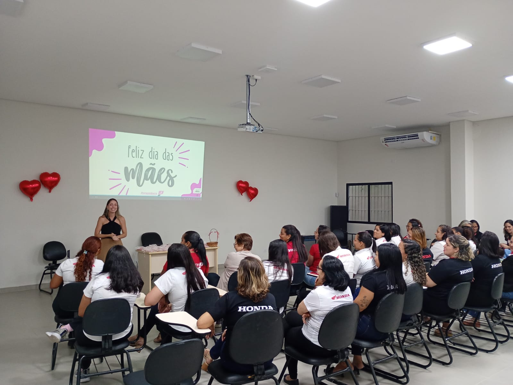
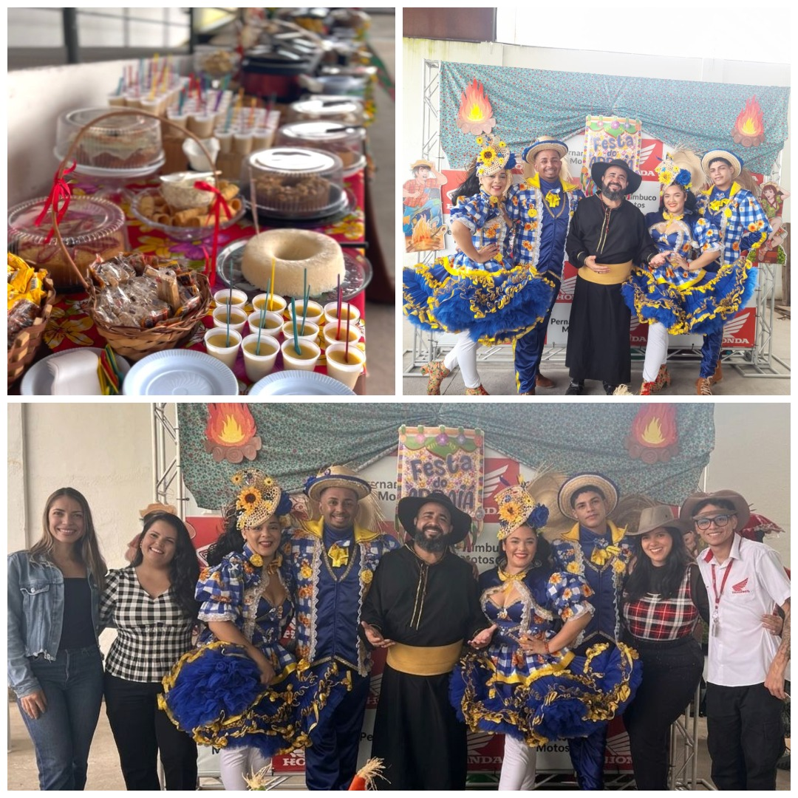
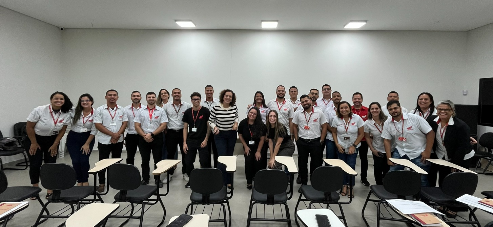
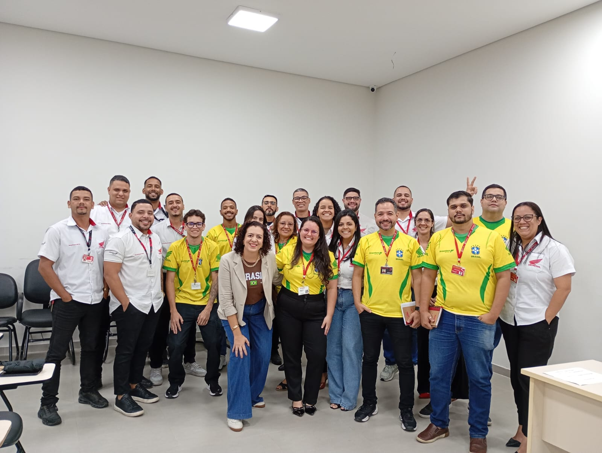

Resumo Executivo
Apresentação dos principais indicadores, performance organizacional e estratégias da gestão de pessoas. pág. 1
O 2º trimestre apresentou um cenário de alerta operacional crítico, com vitórias isoladas na atração de talentos. A incapacidade de manter a força de trabalho ativa e produtiva se refletiu em indicadores preocupantes, especialmente no absenteísmo, que atingiu níveis insustentáveis em maio. pág. 3
Alerta
Absenteísmo chegou a 12,38% em maio, indicando um ponto de atenção que segue sob controle.
Vitória em R&S
Maturidade na eficiência do Recrutamento & Seleção, com contratações rápidas e de alta qualidade técnica e cultural.
Principais Conquistas do Trimestre
Riscos & Oportunidades
Headcount Estável
Crescimento leve de 1.354 para 1.374 colaboradores no período, com distribuição equilibrada entre as três unidades.
Composição do RH
RH estratégico e subdividido, e visão consolidada do quadro de colaboradores. pág. 2, 4
1 RH Estratégico e Subdividido
Recrutamento, Seleção & Clima Organizacional
- Responsável pelo Recrutamento e Seleção, conduzindo todo o processo de ponta a ponta, desde o alinhamento da vaga com o gestor até a contratação de profissionais alinhados à cultura e às necessidades da empresa.
- Atuará também em Clima Organizacional e Engajamento, implementando planos de ação para fortalecer o ambiente de trabalho e a experiência dos colaboradores.
Subsistemas estratégicos de RH
- Treinamento e Desenvolvimento (T&D) e Desenvolvimento Organizacional (DO);
- Endomarketing e Comunicação Interna;
- People Analytics, com acompanhamento de indicadores, dashboards e apoio à tomada de decisão;
- Employer Branding, Onboarding e gestão da experiência do colaborador desde sua integração;
- Remuneração e Benefícios, apoiando a gestão de políticas de valorização e retenção de talentos.
- Política de Cargos e Salários e Fluxos de Desligamentos.
Indicadores Gerais & Estratégicos
Painel consolidado para leitura em menos de 3 minutos — clique em qualquer indicador para aprofundar.
1 Indicadores Gerais
2 Indicadores Estratégicos — Visão Geral do Turnover pág. 13
Diagnóstico Macro
O trimestre encerra com 225 desligamentos globais frente a um Headcount de 1.374 colaboradores, gerando um turnover trimestral aproximado de 16,3% a 17,5% (considerando a média das entradas).
A rotatividade não é homogênea. Metade dos desligamentos da empresa advém de um único departamento (Consórcio: 112 saídas), indicando que o problema é pontual de modelo de negócio/operação, e não estrutural de cultura ou RH.
Conclusões Estratégicas
- O "Fator Consórcio": Excluindo as operações de consórcio, o turnover da companhia cairia pela metade (apenas 113 saídas no 2T26.
- Estabilidade do Backoffice: Áreas Administrativas, Web e Pós-Vendas seguram o headcount, com times maduros e baixa evasão.
- Alerta Regional RJ: Fora do consórcio, o RJ é a praça com maior giro proporcional em Vendas (Veículos Novos) e Administrativo.
Análise: Consórcio e Veículos Novos representam uma "porta giratória", consumindo 67% de todo o esforço de Recrutamento apenas para repor as vagas abertas por demissões.
Análise: A operação como um todo cresceu (saldo positivo de +30 vagas). No entanto, o RJ reduziu seu quadro (perdeu mais pessoas do que contratou no período).
Recrutamento & Seleção — O Destaque do Trimestre
Enquanto os indicadores de retenção preocupam, o R&S entregou resultados excepcionais. O amadurecimento do processo seletivo com o ATS Pandapé (iniciado no 1T26) provou sua eficácia com números históricos. pág. 5-6
Tempo Médio de Preenchimento (dias) Meta ≤ 30 dias
Taxa de Aprovação na Experiência (%) Meta ≥ 80%
O PDF de origem apresenta este indicador apenas em formato gráfico (barras), sem rótulo numérico impresso sobre cada mês.
2 Funil de Candidatos (Mês Atual) pág. 6
57% das vagas concluídas no mês atual.
3 Análise das Contratações
DepartamentosHistórico Acumulado: 255
Consórcio concentra 51% de todas as vagas fechadas no histórico acumulado (130 de 255), seguido por Veículos Novos (16%) e Administrativo (16%).
EstadosTotal: 255
Alagoas lidera as contratações com 116 (45%), seguida por Pernambuco com 88 (35%) e Rio de Janeiro com 51 (20%).
Turnover Geral — Rotatividade Total
Desligamentos no trimestre, evolução mensal e leitura de indicadores. pág. 7-9, 12
Impacto no Negócio
2 Evolução Mensal por Estado pág. 8
Desligamentos por Mês e Estado
Maior volume do mês, tracionado por Consórcio e Veículos Novos (22 saídas conjuntas).
Queda drástica nas saídas (-73% vs Abr). AL assume a liderança de saídas devido ao Consórcio.
Disparo nas demissões, sendo 39 exclusivas do Consórcio. RJ e PE mantêm volumes controlados.
3 Total Acumulado por Estado pág. 8
4 Desligamentos por Departamento pág. 9
Identificação de áreas críticas e zonas de retenção (Acumulado Abr–Jun).
Áreas Críticas (Alto Turnover)
- 1. Consórcio (AL): Representa sozinho 36% de todos os desligamentos da empresa no trimestre (82 de 225). O giro neste estado é extremamente agressivo.
- 2. Veículos Novos (RJ): Com 23 saídas (metade das baixas do departamento), a regional carioca apresenta dificuldade de retenção na força de vendas.
Melhor Retenção (Estabilidade)
- 1. Pós-Vendas (Oficina/Peças): Somados, representam apenas 6% dos desligamentos globais, demonstrando forte retenção nos 3 estados.
- 2. Administrativo (AL e PE): Quase não registraram saídas no trimestre (2 em AL, 6 em PE), mostrando grande estabilidade no backoffice nordestino.
5 Volume de Deligamentos
Motivos
Desligamentos em período de experiência (empresa) lideram com 69 casos, seguidos por demissão sem justa causa (58) e demissionários (50).
Departamentos
Composição do Consórcio (112): Alagoas (82), Pernambuco (27), Rio de Janeiro (3).
Endomarketing, T&D e Projetos Estratégicos
Ações de clima, capacitação de líderes e principais iniciativas estruturantes de RH. pág. 14-15, 18-19
1 Ações de Clima do Trimestre 2T26 pág. 14
Dia das Mães
A ação proporcionou momentos de emoção e satisfação, reforçando o sentimento de valorização das colaboradoras por meio da homenagem realizada. Além de celebrar a data, trouxe reflexões sobre a saúde da mulher para além da maternidade e abordou os desafios vivenciados nesse período, agregando conscientização e cuidado à iniciativa.

São João
A ação de clima teve uma receptividade muito positiva desde o convite, demonstrando o engajamento dos colaboradores. A iniciativa promoveu interação entre diferentes setores, fortaleceu o sentimento de inclusão e valorizou a data comemorativa, refletido na adesão às roupas temáticas e na participação das equipes. Além disso, a ação gerou expectativa para as próximas iniciativas, reforçando o impacto positivo das ações de clima na empresa.

2 Programa de Desenvolvimento de Líderes pág. 15
Módulo II — Comunicação e Feedback
O segundo módulo fortaleceu competências essenciais para a liderança, com foco em comunicação assertiva, comunicação não violenta e gestão de pessoas. Além de preparar os gestores para conduzir feedbacks mais estruturados e efetivos, o treinamento representou um passo importante para a implantação do ciclo de feedback da empresa, promovendo uma cultura de desenvolvimento contínuo e alinhamento entre líderes e equipes.

Módulo III — Gestão de Equipes, Conflitos e Conversas Difíceis
O terceiro módulo preparou os gestores para lidar com situações desafiadoras da rotina de liderança, desenvolvendo habilidades para conduzir conversas difíceis, gerenciar conflitos e manter uma comunicação clara e respeitosa. O conteúdo também reforçou a importância do autoconhecimento como ferramenta para tomadas de decisão mais equilibradas e para uma gestão de equipes mais madura e eficaz.

3 Projetos Estratégicos — Em Andamento pág. 18
4 Projetos Estratégicos — Encaminhados pág. 19
Impacto Financeiro dos Desligamentos
Comparação folha x demissões e análise de custo por estado. pág. 10-11
1 Comparação Detalhada: Folha x Demissões pág. 10
Não há linha para o mês de Junho nesta tabela do PDF original (dado não constante).
R$ 453.998,54 (89 demissões). Pico de cortes em PE e RJ.
R$ 215.399,08 (59 demissões). Queda abrupta artificial, mascarada pelo aumento de demissões em AL.
R$ 379.212,96 (78 demissões). Retomada de alta geral.
2 Análise de Custo por Estado pág. 11
Análise por Departamento (O Pareto do Custo)
Alagoas (Risco Estrutural)
Possui o menor custo financeiro total, mas concentra quase metade de todo o volume de demissões (101). O baixíssimo custo médio indica que a operação contrata e demite em altíssima velocidade. É uma verdadeira "máquina de moer gente".
Rio de Janeiro
Frequência menor, mas o custo individual da demissão é extremamente alto. Focado em líderes de vendas, comissionamentos elevados ou profissionais com tempo de casa.
4 Foco Regional: Rio de Janeiro (Veículos Novos) pág. 12
3 Custos por Departamento
Análise por Departamento (O Pareto do Custo)
Leitura do Pareto
- Veículos Novos (R$510K — 48,6%): maior concentração de custo entre todos os departamentos, quase metade do total analisado.
- Consórcio (R$313K — 29,9%): segunda maior fatia, reforçando o padrão já observado no volume de desligamentos.
- Web (R$101K — 9,6%) e Administrativo (R$53K — 5,1%): participação intermediária, dentro do esperado para o porte das equipes.
- Peças e Outros: juntos representam menos de 7% do custo total, confirmando a estabilidade financeira dessas áreas.
Leitura Gerencial — O Que Esses Números Dizem Sobre a Empresa?
Estamos contratando muito bem, mas perdendo pessoas de formas que podemos controlar. O RH acertou na seleção — o desafio agora é garantir que a liderança retenha e desenvolva esses talentos. pág. 17
Plano de Ação & Soluções (Executive View)
Iniciativas diretas focadas em redução de custos rescisórios, produtividade e retenção comercial. pág. 16
Próximos Passos — Plano de Ação 3T26 pág. 20
Frentes prioritárias de atuação para o 3º trimestre de 2026.
Comparativo 2025 ~ 2026
Visão consolidada dos principais indicadores de RH confrontando o 2º trimestre de 2025 com o 2º trimestre de 2026, por estado e no total consolidado. dados 2025-2026
Headcount Comparativo
Crescimento do quadro total de 1.223 (2025) para 1.374 (2026) colaboradores, com aumento em todas as unidades — destaque para Alagoas (+61) e Pernambuco (+68).
Taxa de Aprovação na Experiência
Aprovados em 45 dias caíram de 211 para 192 no total consolidado; já os aprovados em 90 dias subiram de 136 para 148, puxados por Alagoas.
Absenteísmo
Alta generalizada: total consolidado passou de 11,75% para 13,25% (+1,50 p.p.). O Rio de Janeiro é o ponto mais crítico, saltando de 16,68% para 18,81%.
Turnover
Melhora consolidada: turnover total recuou de 17,58% para 16,10% (-1,48 p.p.), com destaque para Alagoas (-2,90 p.p.). Rio de Janeiro permanece estável.
Tempo de Casa / Tenure
Tempo médio de casa consolidado subiu de 28,0 para 33,1 meses, reflexo direto da queda no turnover — colaboradores permanecendo mais tempo na empresa.
Custos de Desligamentos
Custo total consolidado avançou de R$ 913k para R$ 1.049k (+14,9%), pressionado pelo Rio de Janeiro (+40,6%), mesmo com queda de 11,1% em Pernambuco.
Tabelas de Referência Completas
Consolidação de todas as tabelas numéricas do relatório original, pesquisáveis e ordenáveis, para consulta rápida.